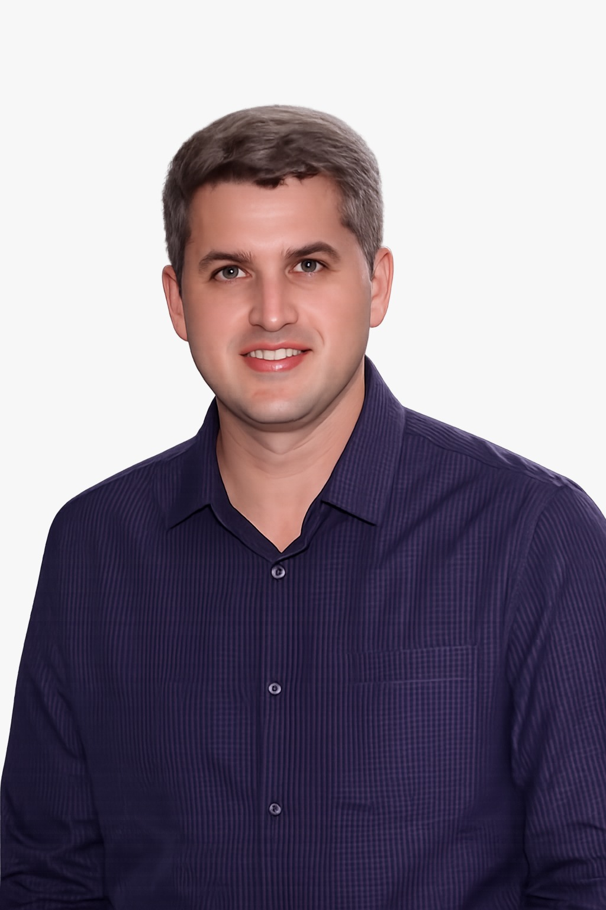

NOSSA HISTÓRIA
PRECISÃO QUE GERA CONFIANÇA,
TECNOLOGIA QUE ENTREGA RESULTADOS.
 2011
2011
Inicio das atividade
 Crescimento
Crescimento
Evolução constante
 Expansão
Expansão
Atuação em projetos
Mais de uma década
NOSSA HISTÓRIA
A JF Topografia e Consultoria Técnica LTDA nasceu em 2011, no município de Orobó, Pernambuco, a partir da
união entre pai e filho, movidos pelo desejo de oferecer serviços técnicos especializados com qualidade,
precisão e compromisso profissional.
A sigla JF é uma homenagem a José Francisco Gonçalves Irmão, cofundador da empresa e pai do atual
responsável técnico, representando não apenas um nome, mas também os valores familiares que deram origem
ao empreendimento: honestidade, dedicação ao trabalho e respeito aos clientes.
Nos primeiros anos de atuação, a empresa concentrou seus esforços na execução de serviços de
regularização de imóveis rurais, auxiliando proprietários rurais na organização documental de suas
propriedades, elaboração de plantas, memoriais descritivos e demais peças técnicas necessárias para
garantir segurança jurídica e valorização patrimonial.

MENSAGEM DO DIRETOR
“A JF Topografia foi construída sobre os ensinamentos e valores transmitidos por meu pai, José Francisco Gonçalves Irmão. O que começou com serviços de regularização rural tornou-se uma empresa comprometida com a inovação, a precisão técnica e a confiança de nossos clientes.
Seguimos investindo em tecnologia e conhecimento para oferecer soluções cada vez mais eficientes e contribuir para o desenvolvimento da nossa região e do nosso estado.”
EVANDRO DE AGUIAR GONÇALVES
Diretor Técnico – JF Topografia e Consultoria Técnica LTDA
ENGENHEIRO CIVIL | AGRIMENSORMissão
Oferecer soluções inovadoras e precisas em topografia e geoprocessamento, impulsionando o desenvolvimento da construção civil e do setor público e privado, por meio de tecnologia de ponta, atendimento personalizado e compromisso com a excelência.
Visão
Ser referência no Nordeste em serviços de topografia e geoprocessamento, reconhecida pela qualidade, inovação e confiabilidade, contribuindo para o crescimento sustentável das cidades e comunidades.
Valores
Precisão e Qualidade – Compromisso com serviços de alta precisão, garantindo confiabilidade nos projetos. Inovação Tecnológica – Utilização de ferramentas e metodologias avançadas para oferecer soluções eficientes. Transparência e Ética– Relacionamento baseado na honestidade e clareza com clientes, parceiros e colaboradores. Atendimento Personalizado – Foco na compreensão das necessidades dos clientes para entregar soluções sob medida. Compromisso com o Desenvolvimento – Contribuir para a evolução da infraestrutura e do crescimento sustentável. Tradição e Evolução – Valorização da experiência aliada à modernização constante.
Faça sua cotação online
Estamos prontos para atender todas as suas necessidades.